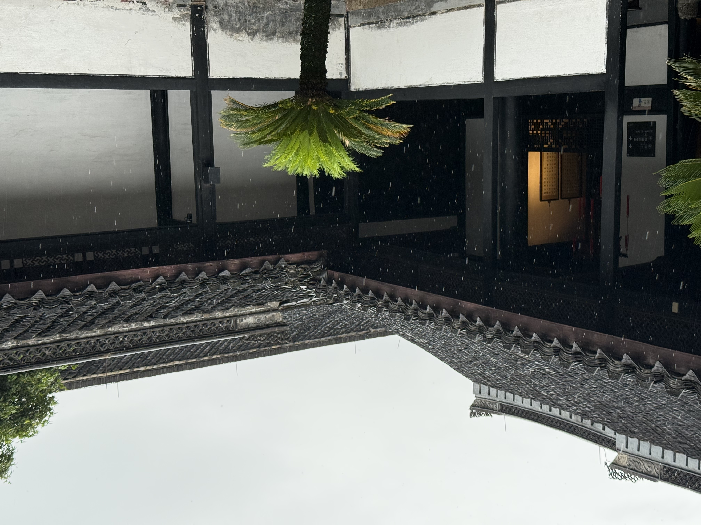

六月十三，去了趟绍兴。
说起绍兴，脑子里蹦出来的第一个词是「人杰地灵」。运河穿城而过，乌篷船摇橹的吱呀声里，藏着两千五百年的光阴。

第一站去了东湖。湖不算大，但妙在山水相依。峭壁如削，倒映在碧绿的湖面上。乘乌篷船进湖，船夫手脚并用，一摇一晃间就飘进了崖壁下的幽深处。洞中凉风习习，隔绝了岸上的暑气，恍惚间竟有些不知今夕何夕的错觉。
下午逛了鲁迅故里。从百草园到三味书屋，课本里的文字变成了眼前真实的院落。百草园其实不大，但想象那个少年在这里捉蟋蟀、拔何首乌的画面，就觉得这个园子其实很大——大到一个孩子的童年装得下。
傍晚在仓桥直街走了走。青石板路被岁月磨得发亮，买了一瓶半干的花雕，老板娘热情地让我尝了一口——入口温润，后劲却足，像极了这座城市的性格。
坐在河边的石栏上看了会儿落日。天色由金变橙，再慢慢沉入靛蓝。乌篷船夫收了桨，点起一盏小灯。河面倒映着两岸的灯火，轻轻晃动，碎成一片温柔的光。
有些地方，读再多书也不如亲自走一趟。绍兴就是这样一座城，它的好，不在景点多壮观，而在那些巷弄深处、桥头水畔，悄悄藏着的烟火气和书卷气。